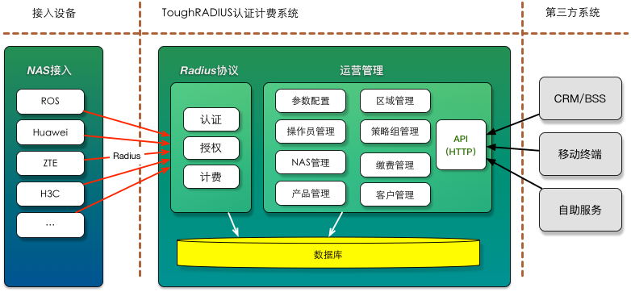

TOUGHRADIUS 项目介绍

ToughRADIUS是一个开源的Radius服务软件，采用于 Apache License 2.0 许可协议发布，从创立之日起，他的宗旨就是服务于中小微ISP，让运营变得更简单。
TOUGHRADIUS支持标准RADIUS协议（RFC 2865, RFC 2866），提供完整的AAA实现。支持灵活的策略管理，支持各种主流接入设备并轻松扩展，具备丰富的计费策略支持。
TOUGHRADIUS支持使用Oracle, MySQL, PostgreSQL, MSSQL等主流数据库存储用户数据，并支持数据缓存，极大的提高了性能。
TOUGHRADIUS支持Windows，Linux，BSD跨平台部署，部署使用简单。
TOUGHRADIUS提供了RADIUS核心服务引擎与Web管理控制台，以及可扩展的API。
TOUGHRADIUS 功能特性
- 标准Radius认证记账支持，提供完整的AAA实现。
- 支持pap，chap，mschap-v2验证。
- 提供基于WEB的管理控制台界面。
- 提供基于WEB的自助服务系统，支持界面定制。
- 基于Python Twisted高性能异步网络框架开发的认证计费引擎。
- Docker支持，支持Windows，Linux，BSD跨平台部署，部署使用简单。
- 支持各种主流接入设备(RouterOS,思科，华为，爱立信，中兴，阿尔卡特，H3C等)并轻松扩展，支持多设备接入管理。
- 支持使用Oracle, MySQL, PostgreSQL, MSSQL等主流数据库存储数据，并支持高速数据缓存。
- 支持预付费时长，预付费流量，预付费包月，买断包月，买断时长，买断流量资费策略。
- 支持会话时长定制。
- 支持数据库定时备份，支持FTP远程备份。
- 支持用户在线查询，解锁，批量解锁，强制下线。
- 支持用户在线统计，流量统计。
- 支持WEB界面上网日志查询。
- 支持灵活的授权策略扩展。
- 支持操作员权限分级管理。
- 支持第三方支付在线充值续费。
- 支持用户数据，财务数据，记账数据导出管理。
- 支持批量用户导入开户。
- 支持在线实时开通账号使用。
- 支持COA强制下线功能。
- 支持实时记账扣费。
- 支持全局与资费级别的自定义记账间隔下发
- 支持不同类型设备自动限速适配。
- 支持账号到期自动下线。
- 支持到期特定地址池下发。
- 支持到期提前通知，通过邮件和webhook触发实现。
- 详细的操作日志记录，条件查询。
系统架构
